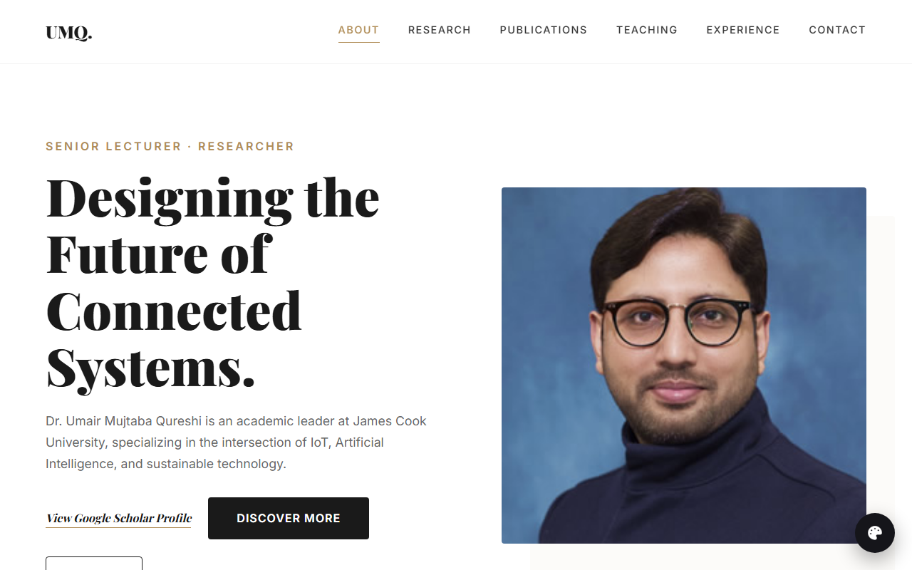
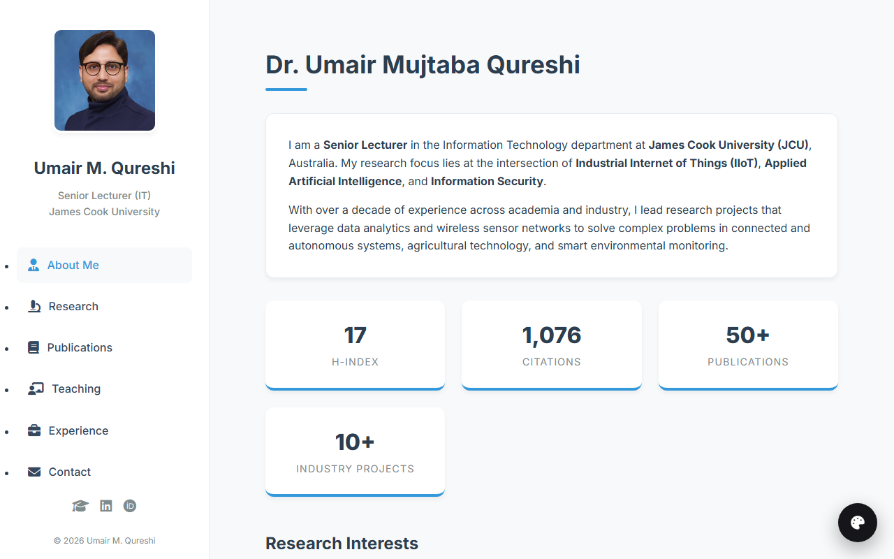
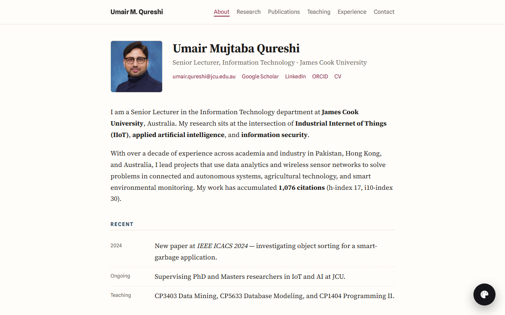
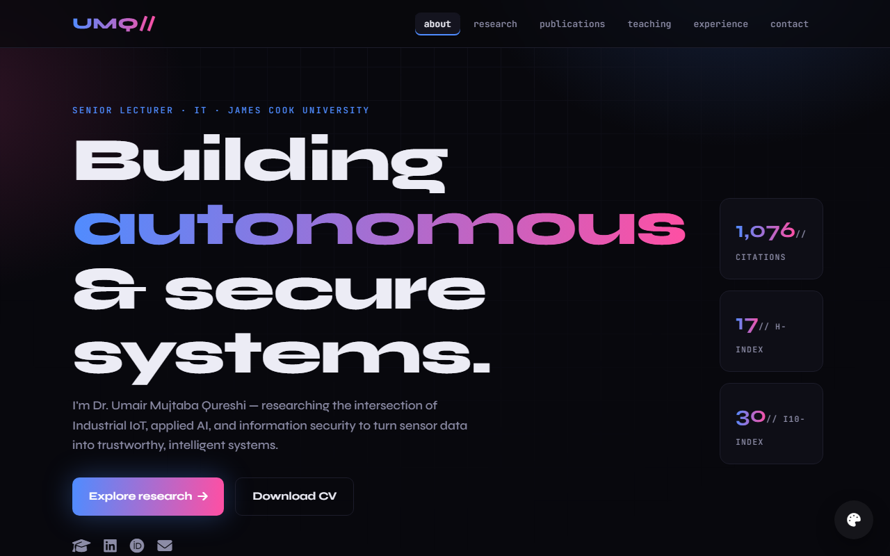
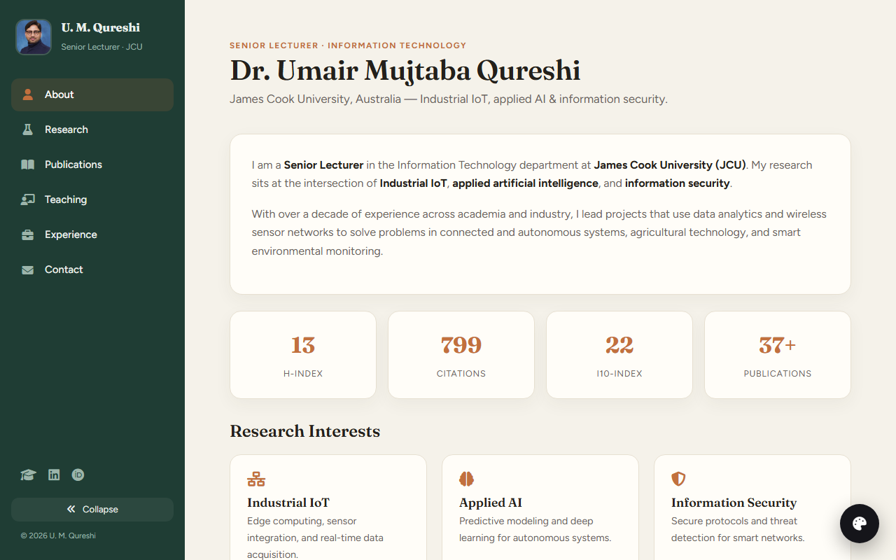

Dr. Umair Mujtaba Qureshi · Senior Lecturer (IT), JCU
Eight complete, multi-page concepts for the same content — Industrial IoT, Applied AI & Information Security. Open any to explore all its pages.
Inside each design, use the floating palette button to switch or return here.



